Frösöberget
GPS: 63.192184,14.607267
Allmänt
Frösöberget ligger bara ett stenkast från Östersund centrum. Med ett par hundra leder är det här träningsklippan för Östersundare.
Länk till förare finns på
Alternativ länk till föraren finns
Vägbeskrivning
Rigor Mortis
Från Östersund. Kör över Frösöbron. Sväng vänster i T-korsningen. Passera Konsum på höger sida och sväng höger direkt efter. Forsätt Trädgårdsvägen hela vägen upp till toppen. Vid 5-vägskorsningen tar du Alpvägen, uppåt höger. Efter ett tag ser du klippan.
Stora klippan
Kör över Frösöbron. Sväng höger i T-korsningen in på Bergsgatan. Fortsätt den tills bostadshusen tar slut (ca en km). När du ser företaget "Attacus" på vänster sida parkerar du vid vägen på högersida.
Bergrummet/Stormväggen
Se stora klippan, men fortsätt förbi Attacus några hundra meter.
Äventyrsväggen
Se "Rigor Mortis", men vid 5-vägskorsningen tar du Vintervägen, uppåt vänster. Parkera nedanför slalombackens café. Gå snett uppåt vänster in i skogen. Gå igenom äventyrsbanan och förbi teaterscenen. Följ stigen upp så ser du klippan.
Väggar & leder
Rigor Mortis
Vänstra sidan
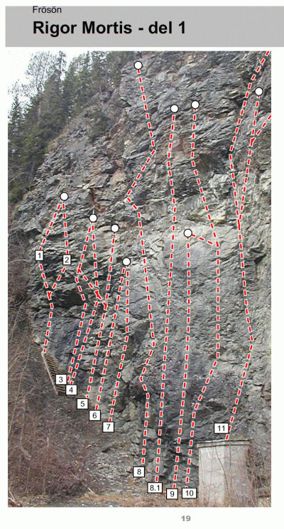
- 1
- Torra tider
- 7-
- Längst upp i slänten. Överhängande på stora grepp.
- 2
- Tyngre tider
- 6+
- Överhängande på stora grepp. Gör en liten travers t.h i mitten av leden.
- 5b
- Bosse ön stock
- 8
- Travers åt vänster till Varma vinklar
- 6
- Mera mat
- 5+
- Går upp i ett hörn som inte syns på bild. Lite osäkrad.
- 7
- Dagens rätt
- 6
- Börjar med ett kraftigt överhäng.
- 8
- Randiga russin
- 6+
- Sitter en skylt vid klippan.(maj -04)
- 10
- Anna Roxia
- 6-
- Börja t.v om betonkuren. Fortsätt upp förbi ankaret t.v och gör avslutningen på Lärken drillar för fin klättring på stora grepp, grad 6+. En lätt passage högt upp har långt mellan bultarna.
- 10b
- Bulle-Mia
- 7-
- En fin fortsättning på Anna Roxia med ett markant punktkrux.
- 11
- Lösa lager
- 6-
- Börja på taket. Kilsäkrad i sprickan, upp till toppen.
- 11b
- Sill i dill
- 6+
- Upp till ankaret.
- 11c
- Skýr
- 6-
- Upp till ankaret på led 12 (Fina fisken)
Mitten
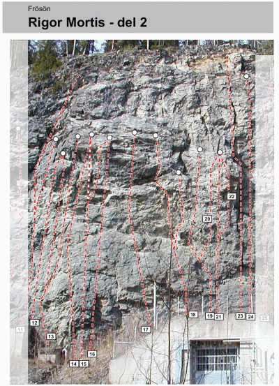
Led 17-24 ombultad/kompletteringsbultad 2012
- 12
- Fina fisken
- 7-
- Börja t.h om betongkuren, drar lite t.v i början upp till en tunn vägg och ett trekantigt tak. Fira från ankare på hyllan eller fortsätt till ankaret på Brüderlein.
- 13
- Svedh
- 6+
- Den vänstra av dom. Samma ankare som Fina fisken
- 13b
- Brüderlein
- 6+
- Den högra av alternativen. Går till hyllan ovanför Fina fisken, avslutas med ett brant överhäng. Första hälften är lös
- -
- Ny led, namn?
- 7-
- Svårt att klippa första bult, en del gör detta med en fuskpinne.
- 18
- Milda meloner
- 6+
- Den vänstra av dem.
- 18b
- Pytt i panna
- 8-
- Det högra alternativet.
- 19
- Ovalätt
- 6
- Börja på betongplattan, vid en kort spricka.
- 20
- Fars dag
- 6+
- Samma start som Ovalätt.
- 21
- Nanna
- 7
- Samma start som Ovalätt.
- 22
- Nån annan
- ?
- Samma start som Ovalätt.
- 23
- Direkta Rigor mortis
- 6
- Den markanta sprickan ovanför betongplattan. Fira från ankare ovan kanten.
- 24
- Kalla kårar
- 7-
- Första leden t.h om den markanta sprickan.
Högra sidan
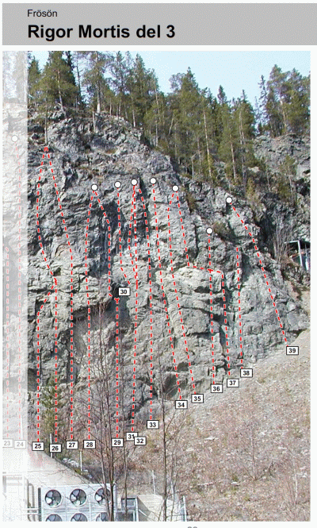
Samtliga leder inom sektorn ombultades/kompletteringbultades 2012
- 25
- Härliga tider
- 7-
- två leder t.h om den markanta sprickan
- 27b
- Klockan klämtar/Tid för Telia
- ?
- Går i det tydliga hörnet
- 29b
- Böjda bananer
- 7-
- Går t.h om det markanta taket.
- 35
- T-wall
- 7
- Att koppla en skruvkarbin i första bulten kan vara bra.
Stora klippan
Piasavaväggen
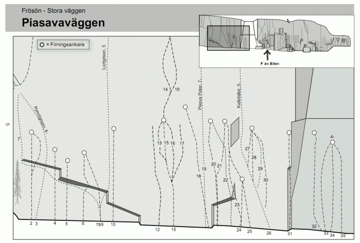
Led nr två till nio går under en lång takformation.
{|
|- valign="top"
| width="350px" |
- 4
- Rymdgrisen
- 6-
- Följer den tydliga sprickan.
- 6
- Tåren trillar
- 7
- Frän takpassage! Tidigare en aid-led.
- 8
- Knorren knakar
- 5
- Lätt att hamna ute i mossan till höger. Försök håll dig på banan!
- 9
- Lortgrisen
- 5
- Kommentar överflödig, du hör på namnet.
- 10
- Nöff
- 6-
- Börjar t.h om taken och fortsätter längs en arete.
12. Projekt (-04)
- 13
- Bedrup
- 5+
- Känslig i överhägnet. Blir lättare om man går på sidan om bb.
- 14
- Midgårds överhäng
- 5+
- Alternativ till Jungfruns andra replängd
- 15
- Jungfrun
- 4+
- Två replängder enbart på bultar.
- 16
- Tintin
- 5+
- Börja på Jungfrun och klättra in på denna.
- 17
- Bullens pilsnerkorv
- 5+
- Börja på Jungfrun och klättra in på denna.
- 18
- Piasava-Petter
- 7-
- Går några meter t.v om taket.
- 19
- Piasava-Peter
- 7-
- Lurig spricka. Små säkringar.
- 20
- Metropolis
- 6+
- Börjar under ett tak för att sedan kliva ut vänster om detta.
- 21
- Nikita
- 7-
- Samma start som Metropolis.
- 22
- ?
- 6-
- Startar något t.h om taket och sneddar över Nikita och slutar på Metropolis ankare. Man kan sätta en kamkil när man passerar sprickan (0,75 Camalot).
23.
(-04 )
24.
(-04 )
- 26
- Kallefallet
- 5-
- Mer info på sidan "Långa kilturer"
- 28
- Kalle kalas
- 7-
- Nytt ankare 2012, börja med "Långa leden"
- 29
- Långa leden
- 5+
- Nytt ankare,ombultad 2012, börja med led 25
- 30
- Simma lugnt
- 5+
- Nytt ankare,ombultad 2012, börja med led 25
- 32
- Gutta på tur
- 4
- Bra för nybörjarklättring.
- 33
- Balla byst
- 4-
- Bra för nybörjarklättring.
- 34
- Runda rumpor
- 4-
- Bra för nybörjarklättring.
- 35
- Rykande rattar
- 4-
- Bra för nybörjarklättring. Har en liten grafitti i starten.
- 36
- Små röda troll
- 4-
- Första leden man kommer till på den här sektorn. Höger om led 35.
Morsans område
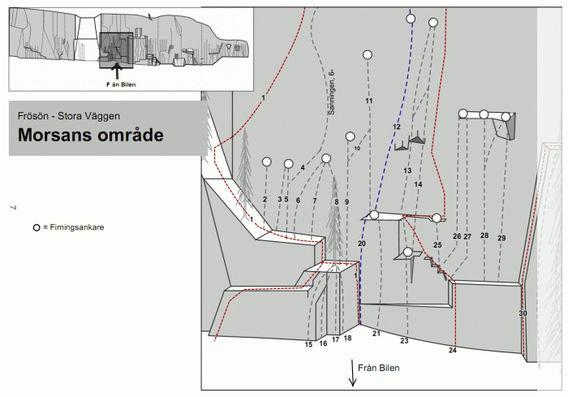
Lederna 2 till 10 börjar uppe på den stora hyllan. Följ det fasta repet till vänster.
- 1
- Falkleden
- 3+
- Börjar i diedret vid Morsans muskler. 2 replängder.
- 9
- Var glad
- 7-
- Rolig klättring. Samma start som Himlakul. Går över det lilla taket.
- 10
- Goda grannar
- 7
- Går till samma ankare som ”Var glad”. Ankare bytt om bultkompletterad 2012
- 10b
- Höstdepression
- 7+
- Utstegsvar. till ”Goda grannar” som fortsätter in i ”Våren värmer”.
- 12
- Morsans muskler del 2
- 6+
-
- 14
- Korpen flyger
- 8+
- Börja med att klättra led 23 (Östpelaren) och fortsätt sedan in på denna led.
- 15
- Borsta med vinden
- 5
- Ofta väldigt mossig
- 20
- Morsans muskler 1:a repl
- 7-
- Börjar i diedret. Ta sedan ett kliv ut t.h och följ bultarna.
- 24
- Hexprocessen
- 5+
- Du hittar den som led nr 24 på "Morsans område". Denna led följer ”minsta motståndets väg” genom den branta väggen till vänster om Stora Diedret.
- 25
- Pullis
- 5
- Ny dragning och nytt ankare 2012
- 26
- Pillis
- 6-
- Nytt ankare 2012
- 27
- Leifs led
- 7+
- Nytt ankare och kompletteringsbultad 2012
- 28
- Rappa på
- 7
- Nytt ankare och ombultad 2012
- 28b
- alt t "Rappa på"
- 7
- I slutet på leden går du direkt över överhänget.
- 29
- Snabba ryck
- 6+
- Nytt ankare och ombultad 2012
Degagementväggen
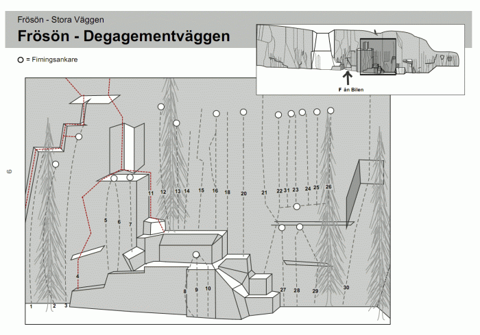
- 2
- Hela hörn
- 6-
- Nytt ankare, ombultad 2012
- 3
- Glada gossar
- 6
- Nytt ankare samt bultad 2012
- 4
- Direkta Lilldjäveln
- 5+
- Mer info på sidan "Långa kilturer".
- 5
- Kul
- 7
- Startar på hylla till höger om "Glada gossar"
- 6
- Ture e väl de
- 5+
- Startar på hylla till höger om "Glada gossar"
- 8
- The Nose
- 5+
- Nytt ankare, ombultad 2012
- 9
- Trollväggen
- 6c+
- Nytt ankare, ombultad 2012
- 11
- Lilldjäveln
- 5
- Mer info på sidan "Långa kilturer".
Led 12 till 18 går från en hylla. Följ hyllsystemet t.h om centralpelaren till du hittar ett fast rep
- 12
- Två fingrar
- 8+
- Börja från stubben och ta leden längs t.v. Betydligt lättare om man använder hörnet.
- 13
- Tack för att du kom hem
- 7+/8-
-
- 14
- Älg-svälj
- 7
- Följer det lilla hörnet genom överhänget
Led 12 till 14 börjar från stubben med repet och upp t.v.
- 16b
- Valla valla
- 7
- På mitten av Yalla yalla går denna led till vänster på ett slätare parti. Två bultar, sedan tillbaka till ovan nämnda led.
- 20
- Oskar (Verinen umpisuolet(Blodiga blindtarmar))
- 6
- FF. Rolig att gå över bullen på mitten.
- 21
- Degament total
- 6-
- Börja nere vid de två stubbarna o gå uppåt med en dragning åt vänster. Fira från ankaret på Miloue. Bra säkrat, om man hittar placeringarna. Camalot 3 är bra i krux.
- 22
- Miloue
- 6+
- Hitta två stubbar på en hylla, leden är den första bultade leden t.v om dessa. Nytt ankare 2012
- 24
- Träden falla
- 6c+
- Ombultad samt nytt ankare 2012. Starta med "Bara barr"
- 25
- Börja tralla
- 6-
- Ombultad 2012, starta med "Bara barr"
- 26
- Ät en fralla
- 6+
- Ombultad 2012
- 27
- Bara barr
- 5+
- Nytt ankare och ombultad 2012
- 27b
- Kalla kottar
- 5+
- FF. Samma som ovan men man går vänster på slutet direkt över överhänget.
- 28
- Liggande löv
- 6+
- T.h om Bara barr.
- 28b
- Krokiga grenen
- 6-
- Starta med "Liggande löv och gå över i "Brokiga blad".
- 30
- Mårten-pillaren
- 6-
- Dåligt säkrat insteg, annars skulle den vara en FF. Bultat ankare.
- ?
- Retardo
- 5+
- Helbultad i två replängder 5, 5+, 60 m rep krävs för avfirning, insteg längst till höger på denna sektor.
Gummans vägg
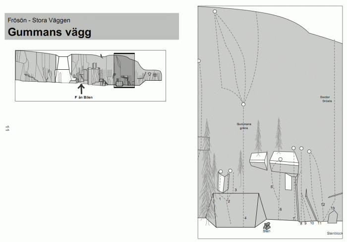
- 4
- Gummans gräns del 1
- 5
- Första replängden. Leden drar lite vänster förbi en gran i starten. Andra replängden: a,b,c eller d
- 4a
- Gummans gräns del 2a
- 6-
- Travers till hörnet.
- 4b
- Gummans gräns del 2b
- 6
- Lite känslig rakt på
- 4c
- Gummans gräns del 2c
- 6
- Rakt upp från ankaret
- 4d
- Gummans gräns del 2d
- 5-
- Följ sprickan lite åt höger.
- 5
- Tjolihojsan
- 7+
- Samma start som Hålögd. Gå till vänster efter tredje bulten.
- 5b
- Tjillevippen
- 6+
- Samma start som Hålögd/Tjolihojsan. Utsteg åt vänster till eget ankare.
- 6
- Hålögd
- 8-
- Samma start som Tjolihojsan.
- 7b
- Ett år
- 7+
- Kilar till överhänget. Gå sedan över till led nr 8(Kasta loss).
- 9
- Solen strålar
- 7+
- Alt insteg till Avd "Kasta loss".
- 10
- Hörnet hänger
- 6+
- Alt insteg till Avd "Kasta loss".
Frösötaket
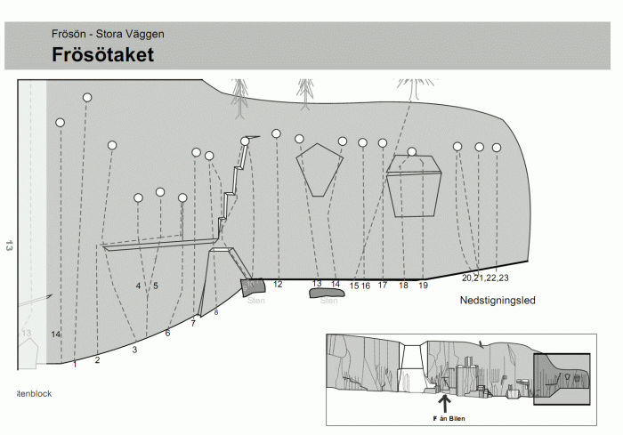
- 14
- Stenbiten
- 6-
- Något lös bitvis.
- 1
- Enzo
- 6+
- T.v om det stora taket. Efter några meter stöter man på ett punktkrux, en kort travers åt vänster ut på den branta väggen fixar detta.
- 2
- Dimman lättar
- 8
- Exponerad travers. Slutar vid ”Listig”.
- 3
- Jaques Mayol
- 7-
- Bultar upp till taket, sen små kilar.
- 4
- Gräset gror
- 7-
- Följer flak/sprick formationen genom taket. Löst och dammigt under taket.
- 6
- Listig
- 7+
- Följer den tydliga sprickan genom taket. Följer sedan samma som led nr 2 (Dimman lättar).
- 8
- Lagom löslig
- 6-
- Den här är lös på sina ställen, därav namnet...
- 9
- Likblek
- 7-
- Klipp första bulten när du står på hyllan. Gå vidare på vänster sida om nästa bult. Vidare vänster till ankare.
- 10
- Platta plättar
- 7-
- Samma start som 9 (Likblek). Klättra till höger om andra bulten. Vidare höger till ankare.
- 11
- Varma våfflor
- 7-
- Lite löst från början. Sedan rakt upp till ankare.
De tre följande lederna går ovanför ett stort block på marken
- ?
- Superanonymt stickspår
- 7+
- Delar första bult med Pulla på, går sedan vänster. Fira från anonyma alpinister.
- 13
- Pulla på
- 8-
- Första bulten sitter i ett litet dieder. Ankaret sitter ovanför kanten.
- 14
- Brännmärkt
- 7-
- Tre täta bultar som drar lite åt vänster i starten.
- 18
- Hinken hävs
- 5+
- ("Därför"?)
Kilturer
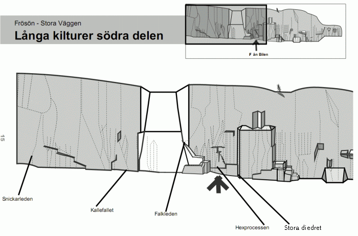
-
- SNICKARLEDEN
- 3+
- Lämplig nybörjarled med jämn och fin klättring första replängden. Välsäkrad och relativt lätt kan den dock ändå vålla den övermodige en och annan förtretlighet.<br>'''1''' III+ 40 m Insteget är i ett markant 5 meter högt dieder. Startar 10 meter till vänter om Sunda Simpor (Piasavaväggen). Standplats vid stora stubben. <br>'''2''' II-III 20 m Upp till en stor hylla åt höger. Fortsätt några meter åt höger på denna hylla. Sedan över trappstegshyllor åt vänster och så rakt upp till krönet.
-
- KALLEFALLET
- 5-
- Namnet återspeglar, som alla förstår, förstebestiga-rens förehavanden. Du hittar insteget som led nr 26 på "Piasavaväggen". <br>'''1''' V- 30 m Ta standplats under taket på den stora hyllan. <br>'''2a''' II 20 m (originalutsteget) Rakt upp genom den stora rännan i hyllans vänstra kant. Lite löst och skitigt.
-
- Falkleden
- 3+
- Detta är den första, av oss kända, leden som klättrats på Frösöberget. Du hittar den som led nr 1 på "Morsans område". Börjar i diedret vid Morsans muskler. 2 replängder.
-
- Hexprocessen(långa kilturer)
- 5+
- Du hittar den som led nr 24 på "Morsans område". Denna led följer ”minsta motståndets väg” genom den branta väggen till vänster om Stora Diedret.Namnet har den efter den våldförda ”hexa” som sitter i en spricka 20 m längre upp.(Tyvärr har någon snott hexan!)<br>'''1''' V+ 50 m Gå upp på terrassen några meter till vänster om Stora Diedret. Därefter snett upp åt vänster, över stora block, fram till en tydlig vinkel. Rakt upp i vinkeln till hylla. Sedan vidare på små hyllor åt höger och försiktigt runt ett stort block och så upp på ytterli-gare en hylla. Här sitter ”hexan” väl inbankad i sin spricka. Trä en ny slinga runt kilen. Fortsätt sedan upp ur vinkeln åt vänster ut på en platta och rakt upp under överhäng. OBS! Stora lösa block till vänster. Vidare ut till höger under överhänget. Därefter snett upp åt höger till kort vinkel och så rakt upp till standplats. <br>'''2''' II-III 10 m Rakt upp till krönet. <br>'''3''' III+ 30 m Uppför kort brant vägg med dragning åt vänster. Vidare till höger uppför en blockuppstapling. Sedan rakt upp över väggen till ett stort block med markant horisontalspricka. Till vänster över detta block och vidare snett upp åt vänster till svagt utbildad vinkel. Uppför vinkeln till standplats.
-
- Stora diedret(långa kilturer)
- 5-
- Du hittar den som led nr 30 på "Morsans område".Frösöbergets verkliga klassiker och fortfarande en av de flottaste linjerna på berget. Fördel med stora kilar.<br>'''1''' V- 45 m (från terrassen ca 40 m) Starta på marken rakt nedanför det markanta hörnet. Klättra den första korta väggen upp till terrassen. Fortsätt sedan uppför det ca 15 m höga hörnet och så vidare via en kort, något överhängande spricka till ett ankare. Standplats. <br>'''2''' V- 15 m 1977, F.Götzmann Kliv upp på en sluttande hylla omedelbart till höger om tallen. Bult bakom löst flak. Fortsätt sedan (lite känsligt) 7-8 m uppåt med dragning åt höger till nästa bult. Sedan rakt upp till standplats. Svårsäkrat, om man inte bestämt sig för att lita på första bulten...
-
- JUNGEL JIM
- 5+
- '''1.''' V+ ?m Stora kilar. Samma start som Mårten Pillaren. På stora hyllan där denna går vänster så fortsätter man rakt upp i ratigt dieder (Krux, lortigt). Stand på någon av hyllorna efter diedret. ÖPPET PROJEKT På den stora hyllan bakom den döda granen finns en fin spricka som leder upp mot första stand. Den sprickan skulle göra hela leden mycket intressantare. <br>'''2.''' IV? ?m Följer en fin lång grov spricka/dieder till toppen.
Bergrummet
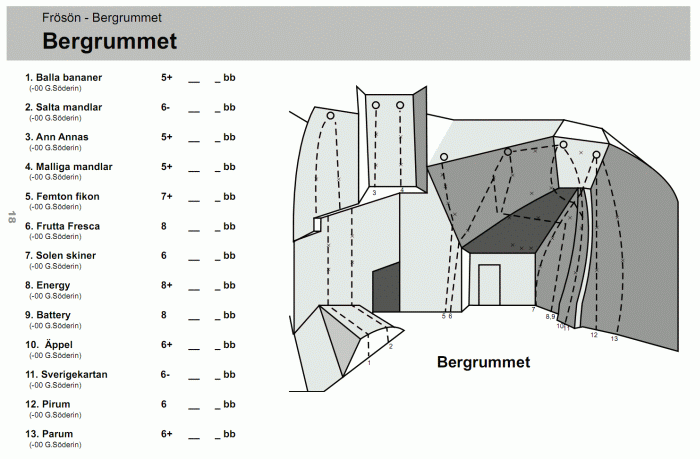
- 5
- Femton Fikon
- 7+
- T.v om det stora taket, upp på hyllan och fortsätt till ankaret längst t.v.
- 6
- Frutta Fresca
- 8/8+
- Starta t.v om det stora taket. Klipp två första bultarna från hyllorna, kliv sedan ut på väggen...om du kan.
- 7
- Solen skiner
- 6
- Starta längst in under taket och traversera detta till ankaret längst t.h. Grafitti höjer den urbana känslan.
- ?
- Pruttgäddan
- 9
- Går innifrån hörnet och tar längsta vägen genom taket till ankaret på Frutta Fresca.
- ?
- Final fantasy
- 9/9+
- Start i Pruttgäddan sen går den via Battery in i Frutta-fresca. När man gjort cruxmovet på Frutta-fresca gör man en pillig match och traverserar ut till torkad frukt och traversen är cruxet.
- 11
- Sverigekartan
- 6-
- Följ Areten på högersidan av taket. Gå ut t.h på slutet. Långt mellan bultarna nära marken, fall inte medan du klipper.
Stormväggen
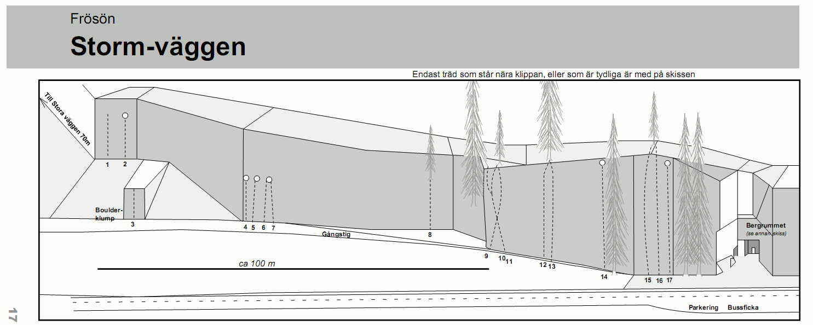
Följande tre leder ligger på en egen vägg som man når genom en otydlig stig ovanifrån eller underifrån genom att passera boulderklumpen på vänstersida.
- 1
- Öppet projekt
- 5+?
- Rensad men ej bultat. Följer flak och sprickor i vänstra delen av väggen.
- ?
- Bulta skiten
- 6
- Går på mitten av väggen.
- 2
- Kalla fötter
- 6-
- T.h på väggen. Svårare om man är kort.
- 3
- Boulderklump
- .
- Bouldering. Hitta på lite egna problem. Fin att toppa ut!
- 8
- Supersprickan på ön
- 5
- Markant spricka ovanför stigen. Fira från träd.
- 9
- Varma vantar
- 5-
- Börja till vänster och korsa sedan led 10 och gå vidare på den vertikala delen. Ankare.
- 10
- Salta sillar
- 6+
- Börja i det något lösa överhänget
- 11
- Solen strålar
- 7-
- Utstegsvariant åt vänster.
- 12
- Stormen ryker
- 5
- Finns ankare, två bultar+kedja under granen i slutet av leden, ser lite muggigt ut. (juli 2011) Går enkelt att gå till samma avslut som led 13.
- 13
- Vinden vänder
- 5
- Ankare.
- 14
- Brokeback mountain
- 5+
- t.v om Rioja och Latino där stigen går in i skogen. Kort vertikal passage i början. Rolig klättring.
- 15
- Latino
- 5
- Saknar ankare!
- 16
- Rioja
- 6-
- Ankare satt -11
Äventyrsväggen
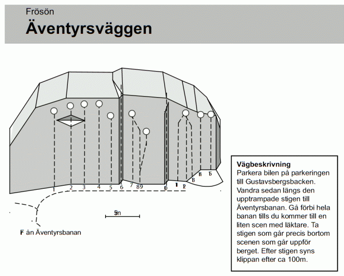
Kategori:sport
Kategori:trad
Kategori:mix
Kategori:Jämtland
Väldigt igenmossad 2009-08
{|
|- valign="top"
| width="350px" |
- 3
- Granna granen
- 4
- Borstad 2010-06
- 5
- Variga vargen
- 5+
- Finputsad 2010-06
Copyright (C) Permission is granted to copy, distribute and/or modify this document under the terms of the GNU Free Documentation License, Version 1.3